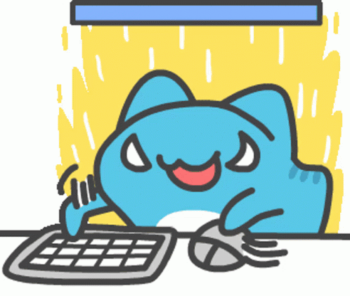

L'art regroupe les œuvres humaines destinées à toucher les sens et les émotions du public. Il peut s'agir aussi bien de peinture que de sculpture, vidéo, photo, dessin, littérature, musique, danse…
L’art est une activité, le produit de cette activité ou l'idée que l'on s'en fait, qui s'adresse délibérément aux sens, aux émotions, aux intuitions et à l'intellect.
en attente...

en attente...
Copyright 2024 © Julie